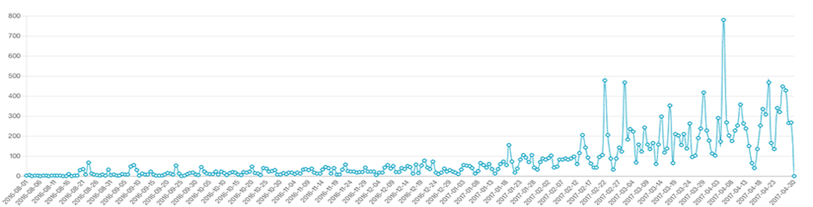

Predictive Analytics
일별 추세 그래프
월별 통계
| 년월 | 유효 수 | 결측치 수 | 최초 | 최대 | 평균 | 합계 |
|---|
| 2014.08 | 27 | 4 | 123,000 | 788,000 | 583,000 | 15,741,000 |
| 2014.09 | 30 | 1 | 114,000 | 589,000 | 361,000 | 10,830,000 |
| 2014.10 | 30 | 0 | 201,000 | 603,000 | 454,000 | 13,620,000 |
| 2014.11 | 29 | 2 | 79,000 | 475,000 | 299,000 | 8,671,000 |
| 2014.12 | 28 | 3 | 81,000 | 152,000 | 214,000 | 9,242,000 |
| 2015.1 | 10 | 2 | 31,000 | 102,000 | 212,000 | 6,123,000 |
결측치 대체방법 결측치란?
결측치란?